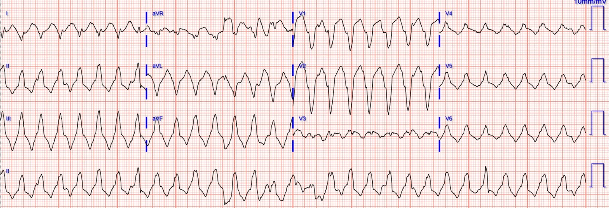
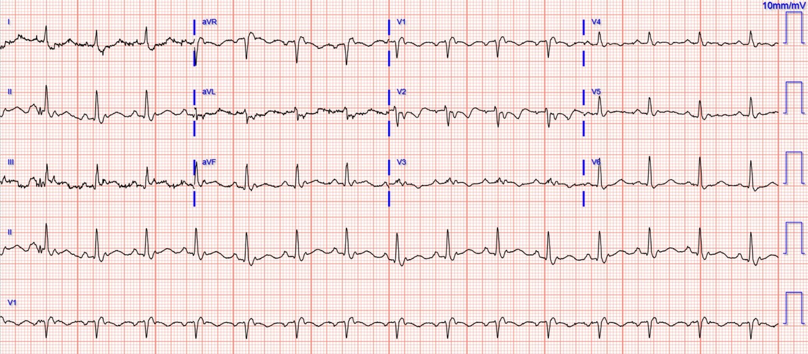
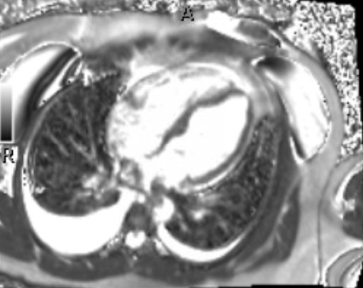
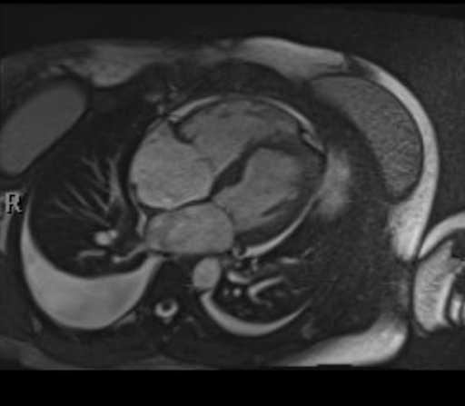
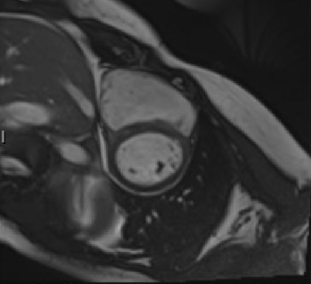
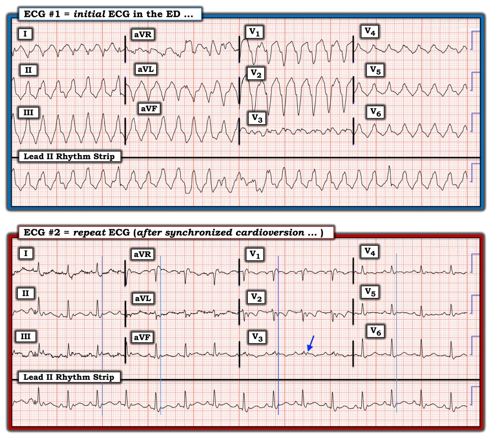
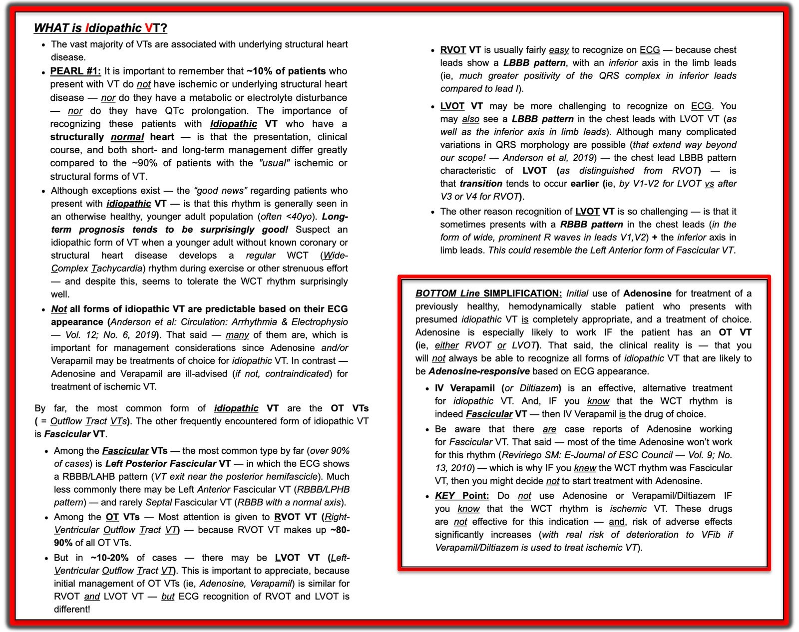

03/06/2023 — Một phụ nữ trẻ bị nhịp nhanh QRS rộng. Lần đầu tiên tôi thực sự tự mình đưa ra chẩn đoán này từ đầu (de novo) ngoài đời thực tại khoa cấp cứu!
Bản dịch tiếng Việt của bài "A young lady with wide complex tachycardia. My first time actually making this diagnosis de novo in real life in the ED!" – Dr. Smith’s ECG Blog. Giữ nguyên toàn bộ 8 hình ảnh của bản gốc.
Tác giả: Pendell Meyers
Một phụ nữ ở độ tuổi 30, tiền sử bệnh lý hầu như không có gì, đến khám chỉ nói đơn giản rằng cô “cảm thấy không khỏe.” Các triệu chứng của cô khởi phát đột ngột khoảng 48 giờ trước nhưng ngày càng nặng thêm, gồm khó chịu vùng thượng vị, buồn nôn, ho, khó thở và choáng váng khi gắng sức. Cô phủ nhận đau ngực và phủ nhận có cảm giác hồi hộp đánh trống ngực, kể cả trong lúc ghi điện tâm đồ lúc phân loại (triage):


— Bạn nghĩ gì? —
= = =
- Dù các dấu hiệu sinh tồn khác đều bình thường, cô vẫn được phân loại hợp lý vào khu hồi sức tích cực của khoa cấp cứu (ED).
- Cô tỉnh táo, nhanh nhẹn, tưới máu tốt, ý thức bình thường và khám thực thể nhìn chung không có gì đáng chú ý, ngoại trừ nhịp tim nhanh đều, có thể có ran ở cả hai đáy phổi, và ấn hạ sườn phải (RUQ) hơi đau.
- Siêu âm tại giường của tôi chất lượng chưa đủ tốt, nhưng cho thấy EF chung có phần giảm, tĩnh mạch chủ dưới (IVC) căng, không thay đổi theo hô hấp, không có tràn dịch màng ngoài tim, và đường B lan tỏa hai bên.
= = =
Bạn nghĩ gì về điện tâm đồ của cô ấy?
Rõ ràng đây là một nhịp nhanh QRS rộng (dù thời gian QRS không vượt quá 120msec bao nhiêu). Có một ít nhiễu do cử động rải rác, nên bước xác định tiếp theo — nhịp đều hay không đều hoàn toàn — hơi phức tạp một chút, nhưng tôi tin rằng nhiễu do cử động là lý do duy nhất khiến nhịp này trông không đều. Tại giường, khi nhìn monitor trong những khoảng không có nhiễu do cử động, nhịp này có vẻ đều hoàn toàn và đơn dạng.
- Vì vậy, tôi tin rằng đây là một nhịp nhanh QRS rộng, đơn dạng, đều. Do đó chẩn đoán phân biệt gồm VT kinh điển, VT vô căn, và nhịp nhanh xoang (ST)/SVT/cuồng nhĩ kèm dẫn truyền lệch hướng.
Nhìn chung, phần lớn các nhịp thuộc nhóm này rốt cuộc sẽ là VT (kinh điển). Tuổi càng cao, càng nhiều bệnh đồng mắc, có tiền sử bệnh tim, thời gian QRS càng dài và bệnh nhân càng nặng, thì khả năng VT trong nhóm chẩn đoán phân biệt này càng tăng thêm.
Nhưng đây là một phụ nữ trẻ không có tiền sử bệnh, dường như đã ở trong VT ít nhất 48 giờ, các dấu hiệu sinh tồn khác bình thường và không có biểu hiện nguy kịch, với phức bộ QRS không quá rộng,
— VÀ —
- Hình dạng phức bộ QRS là dạng LBBB + trục hướng xuống dưới. Hình dạng QRS đặc thù này có thể phù hợp với nhịp nhanh thất đường ra thất phải (RVOT VT), vốn liên quan đến loạn sản thất phải nền.
- Hoặc vẫn có thể đơn giản chỉ là VT kinh điển.
- Hoặc vẫn có thể là nhịp nhanh xoang/SVT/cuồng nhĩ kèm dẫn truyền lệch hướng.
= = =
Thông thường, cách xử trí hay dùng nhất của tôi với một nhịp nhiều khả năng là VT sẽ là an thần và sốc điện chuyển nhịp chủ động, hoặc amiodarone/procainamide.
Nhưng tôi đã nhớ ra / nhận ra hình ảnh này từ bài tổng quan về VT vô căn này mà tôi viết nhiều năm trước. Tôi tự hỏi liệu đây có thể là RVOT VT hay không.
- RVOT VT được ghi nhận đôi khi đáp ứng với adenosine. Đây là một người trẻ và rất ổn định. Adenosine không gây hại trong VT kinh điển.
- Vì vậy chúng tôi đã tiêm tĩnh mạch nhanh 12 mg adenosine.
Không có gì xảy ra, không có “chỗ ngắt” nào trong nhịp, không có tác dụng, tần số tim không thay đổi, không gì cả.
- Vì vậy chúng tôi tiến hành an thần bằng etomidate và sốc điện chuyển nhịp đồng bộ, chuyển nhịp thành công ngay lần đầu.
Đây là điện tâm đồ 12 chuyển đạo của cô sau sốc điện chuyển nhịp:


— Bạn nghĩ gì về bản ghi này? —
= = =
Tôi tự nhủ: Không thể nào! Phải chăng đây là ngày lần đầu tiên tôi thực sự phát hiện sóng epsilon như một chẩn đoán mới? Nó hiếm đến mức tôi vẫn còn chưa chắc chắn.
Có nhịp xoang với phần đầu phức bộ QRS bình thường, nhưng có một sóng trông rất bất thường ở cuối phức bộ QRS, thấy ở hầu như tất cả các chuyển đạo. Nó trông đặc biệt bất thường ở chuyển đạo V2 và V3, nơi rõ ràng đây không phải một sóng J thông thường hay blốc nhánh phải không hoàn toàn.
Khi dạy các hình ảnh điện tâm đồ quan trọng trong ngất cho các bác sĩ nội trú của mình, trước đây tôi luôn phải tìm các báo cáo ca và bài tổng quan để cho họ xem những sóng epsilon hiếm gặp. Chúng hiếm và khó gặp trong thực hành thường ngày tại khoa cấp cứu.
Cô tỉnh lại sau an thần mà không có biến cố gì và có vẻ thấy đỡ hơn một chút. Xét nghiệm đáng chú ý có tăng nhẹ men gan (transaminase) không kèm tăng bilirubin máu, BNP tăng (1,226 mg/dL) và troponin tăng (73 ng/L), tất cả đều có vẻ có thể quy hợp lý cho khả năng đã có 48 giờ nhịp nhanh thất, bệnh gan sung huyết, v.v. X-quang ngực xác nhận phù phổi hai bên và tràn dịch lượng ít hai bên.
- Tôi cho cô nhập khoa tim mạch với những mối lo ngại này, và chúng tôi thống nhất rằng MRI tim có thể giúp xác nhận khả năng ARVC.
Một mẫu nhỏ hình MRI được trình bày bên dưới, và kết quả đọc chính thức gồm:
- LVEF 44%, kích thước buồng thất trái bình thường. Chức năng tâm thu thất trái suy giảm theo vùng, kèm mỏng thành và vô động ở thành dưới đoạn giữa, vách dưới đoạn giữa và thành dưới-bên đoạn giữa. Thành trước đoạn đáy và vách đoạn đáy giảm động.
- RVEF 34%, thất phải giãn nhẹ. Chức năng tâm thu thất phải giảm nặng toàn bộ. Có loạn động khu trú vùng đường ra thất phải (RVOT). Có hở van ba lá mức độ nhẹ-vừa.
- Ngấm thuốc muộn gadolinium: Sẹo đa ổ ở vách (kể cả vách phía thất phải), thành trước đoạn đáy và sẹo xuyên thành vùng dưới đoạn giữa – một kiểu tăng ngấm thuốc không do bệnh động mạch vành.
Nhìn chung, các dấu hiệu trên MRI tim (CMR) phù hợp với bệnh cơ tim gây loạn nhịp. Có hai tiêu chuẩn chính trên CMR theo Nhóm chuyên trách (Task Force) cho ARVC:
- 1) RVEF <40% kèm rối loạn vận động thành khu trú của thất phải.
- 2) Giãn buồng thất phải với RVEDVI>100 ml/m2.






Cô được chẩn đoán chính thức là ARVC. Cô được cấy máy khử rung tim tự động (AICD). Cô được khuyên hạn chế nghiêm ngặt việc vận động gắng sức và được đề nghị làm xét nghiệm di truyền.
- Không có thông tin theo dõi dài hạn.
Xem các ca tương tự hoặc liên quan tại đây:
- Regular Wide Complex Tachycardia. What is the Diagnosis? (Nhịp nhanh QRS rộng đều. Chẩn đoán là gì?)
- Syncope in a young man (Ngất ở một nam giới trẻ)
- Young man with syncope while riding a bike [Arrhythmogenic Right Ventricular Dysplasia (ARVD)] (Nam giới trẻ bị ngất khi đang đạp xe [loạn sản thất phải gây loạn nhịp (ARVD)])
= = =
Xem bài tổng quan của tôi về các VT vô căn tại đây:
- Idiopathic Ventricular Tachycardias for the EM Physician (Các nhịp nhanh thất vô căn dành cho bác sĩ cấp cứu)
= = =
Xem bài tổng quan ngắn của chúng tôi về ARVD tại đây:
- Young man with syncope while riding a bike [Arrhythmogenic Right Ventricular Dysplasia (ARVD)] (Nam giới trẻ bị ngất khi đang đạp xe [loạn sản thất phải gây loạn nhịp (ARVD)])
- ARVD, còn gọi là bệnh cơ tim thất phải gây loạn nhịp, được ước tính có tỷ lệ hiện mắc 1 trên 5000 người trưởng thành và là nguyên nhân của khoảng 11% các ca đột tử ở người trẻ tuổi, và 22% trong một nghiên cứu trên vận động viên ở miền bắc nước Ý. Chẩn đoán không dễ (xem bên dưới).
- Đây là một bài tổng quan năm 2017 về ARVD trên tạp chí New England Journal
= = =
Có một công bố năm 2010 của Nhóm chuyên trách (Task Force) về chẩn đoán ARVD: Chẩn đoán bệnh cơ tim/loạn sản thất phải gây loạn nhịp: đề xuất sửa đổi các tiêu chuẩn của Nhóm chuyên trách (Diagnosis of arrhythmogenic right ventricular cardiomyopathy/dysplasia: proposed modification of the task force criteria).
Toàn văn miễn phí:
- https://www.ahajournals.org/doi/pdf/10.1161/CIRCULATIONAHA.108.840827 (bản PDF toàn văn trên tạp chí Circulation)
Có 6 nhóm tiêu chuẩn:
- 1) Hình ảnh học
- 2) Giải phẫu bệnh
- 3) Tái cực trên điện tâm đồ
- 4) Khử cực trên điện tâm đồ
- 5) Rối loạn nhịp
- 6) Tiền sử gia đình.
Những điểm nổi bật về điện tâm đồ và bệnh sử của công bố này là (nghi ngờ ARVD khi có):
- 1) Ngất nguy cơ cao không có nguyên nhân nào khác; tiền sử gia đình
- 2) Bất thường khử cực (tiêu chuẩn chính):
- a) Sóng Epsilon
- b) Kéo dài khu trú (trên 110 ms) của phức bộ QRS ở các chuyển đạo trước tim bên phải (V1-V3)
- 3) Bất thường tái cực ở bệnh nhân từ 14 tuổi trở lên (vì bệnh nhân nhỏ tuổi hơn thường có sóng T thiếu niên)
- a) Phụ: sóng T đảo ngược ở các chuyển đạo trước tim bên phải V1-V2
- b) Chính: sóng T đảo ngược ở các chuyển đạo trước tim bên phải V1-V3 hoặc xa hơn (tiêu chuẩn chính)
- 4) Rối loạn nhịp
- a) Tiêu chuẩn chính:
- i) VT có hình dạng LBBB với trục hướng lên trên (QRS âm hoặc không xác định ở các chuyển đạo II, III, aVF và dương ở chuyển đạo aVL) (tiêu chuẩn chính)
- b) Tiêu chuẩn phụ:
- i) VT có hình dạng LBBB với trục hướng xuống dưới (QRS dương ở các chuyển đạo II, III, aVF và âm ở chuyển đạo aVL) (tiêu chuẩn phụ)
- ii) Hơn 500 PVC mỗi giờ
- a) Tiêu chuẩn chính:
- 5) Cuối cùng, đây là một bệnh tiến triển và bệnh nhân chưa có bất thường trên điện tâm đồ có thể xuất hiện các bất thường này theo thời gian.
Đây là một ví dụ về sóng epsilon (hình C). Và một ví dụ khác. Dưới đây là một số ví dụ tuyệt vời từ bài viết về loạn sản thất phải (được dịch bằng Google Translate!) trên trang web tiếng Pháp tuyệt vời của Pierre Taboulet: #1, #2, #3
Đây là một ví dụ tuyệt vời trên Wave Maven.
Đây là phần giải thích về tầm quan trọng của chuyển đạo V1 và V2.
Đây là một ví dụ hay khác.
Một số tài liệu tham khảo rất tốt về ARVD:
Đây là một báo cáo ca bệnh có nhiều thông tin hữu ích, từ năm 2019, nhưng bạn chỉ đọc được nếu có đăng ký tạp chí American J Cardiol:
- Holshouser JW và Littmann L. Usefulness of the Electrocardiogram in Establishing the Diagnosis and Prognosis of Arrhythmogenic Right Ventricular Cardiomyopathy (Giá trị của điện tâm đồ trong xác lập chẩn đoán và tiên lượng bệnh cơ tim thất phải gây loạn nhịp)
Các tài liệu tham khảo khác, trích từ bài báo trên:
- 1 FI MarcusEpsilon waves aid in the prognosis and risk stratification of patients with ARVC/D (Sóng epsilon hỗ trợ tiên lượng và phân tầng nguy cơ bệnh nhân ARVC/D) — J Cardiovasc Electrophysiol, 26 (2015), tr. 1211-1212
- CrossRefXem bản ghi trên ScopusGoogle Scholar2
- FI Marcus, W ZarebaThe electrocardiogram in right ventricular cardiomyopathy/dysplasia. How can the electrocardiogram assist in understanding the pathologic and functional changes of the heart in this disease? (Điện tâm đồ trong bệnh cơ tim/loạn sản thất phải. Điện tâm đồ có thể giúp hiểu những thay đổi bệnh lý và chức năng của tim trong bệnh này như thế nào?)
- J Electrocardiol, 42 (2009), tr. 136.e1-136.e5
- 3 RNW Hauer, MGPJ Cox, JA GroenewegImpact of new electrocardiographic criteria in arrhythmogenic cardiomyopathy (Tác động của các tiêu chuẩn điện tâm đồ mới trong bệnh cơ tim gây loạn nhịp) Front Physiol, 3 (2012), tr. 352, eCollection 2012
- Google Scholar
- 4 FI Marcus, WJ McKenna, D Sherrill, C Basso, B Bauce, DA Bluemke, H Calkins, D Corrado, MG Cox, JP Daubert, G Fontaine, K Gear, R Hauer, A Nava, MH Picard, N Protonotarios, JE Saffitz, DM Sanborn, JS Steinberg, H Tandri, G Thiene, JA Towbin, A Tsatsopoulou, T Wichter, W ZarebaDiagnosis of arrhythmogenic right ventricular cardiomyopathy/dysplasia: proposed modification of the task force criteria (Chẩn đoán bệnh cơ tim/loạn sản thất phải gây loạn nhịp: đề xuất sửa đổi các tiêu chuẩn của Nhóm chuyên trách) Circulation, 121 (2010), tr. 1533-1541
- Xem bản ghi trên ScopusGoogle Scholar
- 5 WC Roberts, N Kondapalli, SA HallUsefulness of total 12-lead QRS voltage for the diagnosis of arrhythmogenic right ventricular cardiomyopathy in patients with heart failure severe enough to warrant orthotopic heart transplantation and morphologic illustration of its cardiac diversity (Giá trị của tổng điện thế QRS trên toàn bộ các chuyển đạo thường quy trong chẩn đoán bệnh cơ tim thất phải gây loạn nhịp ở bệnh nhân suy tim nặng đến mức cần ghép tim tại chỗ, và minh họa hình thái về tính đa dạng tim của bệnh) Am J Cardiol, 122 (2018), tr. 1051-1061
- 6 JE Madias, R Bazaz, H Agarwal, M Win, L MedepalliAnasarca-mediated attenuation of the amplitude of electrocardiogram complexes: a description of a heretofore unrecognized phenomenon (Giảm biên độ các phức bộ điện tâm đồ do phù toàn thân: mô tả một hiện tượng trước nay chưa được nhận biết) J Am Coll Cardiol, 38 (2011), tr. 756-764
- Google Scholar
= = =
=====================================
BÌNH LUẬN CỦA TÔI, bởi KEN GRAUER, MD (3/6/2023 — cập nhật cho WordPress ngày 7/7/2026):
Ca bệnh hôm nay thật đáng mừng — ở chỗ nó minh họa một hiện tượng ít gặp mà BS. Meyers đã phát hiện ra, với ý nghĩa có thể cứu sống bệnh nhân. Cũng như BS. Meyers — trước đây tôi chưa từng thấy sóng epsilon như một chẩn đoán mới! Tôi tập trung bình luận vào một số khía cạnh khác của ARVC/D (bệnh cơ tim–loạn sản thất phải gây loạn nhịp — Arrhythmogenic Right Ventricular Cardiomyopathy-Dysplasia) với hy vọng bổ sung thêm cho phần bàn luận xuất sắc của BS. Meyers.
Để rõ ràng, trong Hình 1 — tôi đã đưa lại 2 điện tâm đồ của ca hôm nay.
= = =
Hình 1: 2 điện tâm đồ của ca hôm nay. Các đường dọc màu XANH LAM đánh dấu thời điểm của sóng epsilon ở tất cả các chuyển đạo (so với mũi tên XANH LAM đánh dấu sóng epsilon ở chuyển đạo V3).


= = =
Bệnh sử trong ca hôm nay:
Bệnh nhân hôm nay là một người trẻ trước đó khỏe mạnh (tức là một phụ nữ ở độ tuổi 30) — dường như đây là lần thứ 1 cô đến cơ sở y tế vì một cơn rối loạn nhịp liên quan đến bệnh lý của mình.
- Lưu ý: Bệnh nhân này ổn định huyết động và không hồi hộp đánh trống ngực vào thời điểm ghi điện tâm đồ #1. Vì các triệu chứng “cảm thấy không khỏe” của chị đã bắt đầu từ 48 giờ trước — nhiều khả năng chị đã ở trong rối loạn nhịp này một khoảng thời gian đáng kể trước khi đến khoa cấp cứu (và có lẽ trước đó chị đã có những cơn rối loạn nhịp tự hết mà chưa bao giờ đi khám).
- Do đó: Ca này mang lại cho tôi nhiều hiểu biết sâu sắc, vì nó minh họa rằng: i) Bệnh nhân ARVC có thể gần như không có triệu chứng trong một thời gian dài; — và, ii) Dù không thường gặp — chúng ta có thể gặp những bệnh nhân ở độ tuổi 30 (hoặc có thể lớn tuổi hơn) đến khám lần thứ 1 vì ARVC.
= = =
Điện tâm đồ ban đầu:
Bệnh nhân hôm nay đến viện trong tình trạng ổn định huyết động với một nhịp WCT ( = Wide-Complex Tachycardia — nhịp nhanh QRS rộng) đều tần số ~180/phút, không có dấu hiệu rõ ràng của hoạt động nhĩ. Như BS. Meyers đã nêu — chẩn đoán phân biệt bao gồm: i) VT ở bệnh nhân có bệnh mạch vành hoặc bệnh tim cấu trúc khác; ii) VT vô căn — trong đó không có bệnh tim cấu trúc nền; — và, iii) SVT kèm blốc nhánh có sẵn từ trước hoặc dẫn truyền lệch hướng.
- Trong các nhịp SVT — tần số ~180/phút khiến cả nhịp nhanh xoang lẫn cuồng nhĩ (AFlutter) đều ít có khả năng (dù không phải là không thể). Không thường gặp nhịp nhanh xoang trên 160-170/phút ở bệnh nhân nằm ngửa (không gắng sức) — còn dẫn truyền 2:1 trong AFlutter sẽ tương ứng với tần số 360/phút, nhanh hơn khoảng tần số nhĩ thường gặp của AFlutter.
- Nhìn chung — tôi cho rằng nhịp SVT ít có khả năng trong ca hôm nay. Mặc dù hình dạng QRS của điện tâm đồ #1 thoạt nhìn giống dẫn truyền LBBB — vẫn có những đặc điểm không điển hình. Bao gồm: i) Trục lệch phải trên mặt phẳng trán (tức là QRS âm ưu thế ở chuyển đạo I); — và, ii) Vùng chuyển tiếp sớm hơn dự kiến so với LBBB (tức là với một phức bộ đẳng điện rất nhỏ ở chuyển đạo V3 và QRS đã dương ưu thế ngay từ chuyển đạo V4 — trong khi với dẫn truyền LBBB điển hình, vùng chuyển tiếp phải chậm ít nhất tới chuyển đạo V5).
- Đặc biệt ở một người trẻ trưởng thành trước đó khỏe mạnh — hình dạng QRS không điển hình cho một rối loạn dẫn truyền đã biết (tức là LBBB, RBBB, LAHB, LPHB) — làm tăng đáng kể khả năng một WCT đều hóa ra là VT.
- LƯU Ý #1: Ban đầu tôi nghĩ có thể có phân ly nhĩ thất trên điện tâm đồ #1 — nếu đúng thì điều đó sẽ chứng minh nhịp này là VT. Tuy vậy — sau khi xem xét kỹ (thoải mái trong phòng làm việc ở nhà) — tôi đi đến kết luận rằng compa đo của tôi đơn giản là không “dò bước” ra được bất kỳ hoạt động nhĩ nhất quán nào (Tôi hoàn toàn thừa nhận việc cố nhận ra phân ly nhĩ thất bên giường một bệnh nhân đang diễn tiến xấu nhanh khó khăn hơn biết bao!).
- LƯU Ý #2: Dù AVRT ngược chiều ở bệnh nhân WPW không thể bị loại trừ chỉ dựa trên một điện tâm đồ duy nhất này — hơn 95% các nhịp WCT đều không phải trên thất sẽ hóa ra là VT. Về mặt lâm sàng, việc phân biệt AVRT ngược chiều với VT thường không thiết yếu tại khoa cấp cứu — vì xử trí ban đầu thích hợp thường giống nhau (tức là cả hai nhịp đều sẽ đáp ứng với sốc điện chuyển nhịp).
= = =
Điều này để lại cho chúng ta khả năng cao rằng điện tâm đồ #1 là một dạng nào đó của VT.
- Mặc dù trong dân số chung — VT có kèm bệnh tim cấu trúc nền là dạng VT chiếm ưu thế (chiếm tới 90% các ca VT) — VT vô căn trở nên thường gặp hơn đáng kể ở người trẻ trưởng thành không có bệnh tim đã biết (Xin xem PHẦN BỔ SUNG của tôi bên dưới nếu bạn muốn tìm hiểu thêm về các VT vô căn).
- Như BS. Meyers đã nêu — hình dạng QRS của điện tâm đồ #1 với trục lệch phải trên mặt phẳng trán — kèm đặc điểm LBBB ở các chuyển đạo ngực sẽ phù hợp, ở bệnh nhân trẻ trưởng thành này, với RVOT VT (Right Ventricular Outflow Track VT — VT đường ra thất phải), là dạng VT vô căn thường gặp nhất.
- Như trong PHẦN BỔ SUNG của tôi bên dưới — điều trị ban đầu bằng Adenosine (như BS. Meyers đã dùng) là hoàn toàn thích hợp ở bệnh nhân ổn định huyết động này — vì RVOT VT có thể là một dạng VT có đáp ứng với adenosine. Khi điều này không hiệu quả — sốc điện chuyển nhịp đồng bộ rõ ràng là điều trị được lựa chọn.
= = =
Bạn có thể phân biệt RVOT VT với VT do ARVC không?
Theo những gì tôi xem xét về chủ đề này — việc phân biệt RVOT VT với VT ở bệnh nhân ARVC không thể thực hiện một cách đáng tin cậy chỉ dựa trên một điện tâm đồ duy nhất ghi trong lúc có nhịp WCT đều.
- Hoffmayer và cs. đã nghiên cứu câu hỏi này (JACC 58(8):831-838, 2011) — và trong khi các tác giả này kết luận rằng một số đặc điểm điện tâm đồ thực sự giúp nhận định khả năng RVOT VT so với ARVC đối với bản ghi WCT đều có hình dạng LBBB/trục hướng xuống dưới — tôi lại đi đến kết luận ngược lại sau khi xem xét nghiên cứu của họ.
- Vấn đề khi dùng tiêu chí thời gian QRS >120 msec. ở chuyển đạo I và vùng chuyển tiếp ở chuyển đạo ngực chậm tới ít nhất chuyển đạo V5 hoặc V6 — được làm nổi bật qua ca của chúng tôi, trong đó bệnh nhân hôm nay được phát hiện có ARVC mặc dù thời gian QRS ở chuyển đạo I không đánh giá được và vùng chuyển tiếp sớm hơn.
- Tôi có nghĩ rằng tiêu chí phân mảnh (tức là khía quá mức ở một hoặc nhiều phức bộ QRS) có thể hữu ích — vì những người trẻ trưởng thành vốn khỏe mạnh bị RVOT VT dường như ít có khả năng biểu hiện phân mảnh (vốn thường chỉ ra có “sẹo” nền). Nhưng độ nhạy và độ đặc hiệu của mọi tiêu chí các tác giả đưa ra đều chưa hoàn hảo — với sự chồng lấp tiêu chí giữa bệnh nhân RVOT VT và VT do ARVC.
- T.B. (P.S.): Dù có nhiễu trên điện tâm đồ #1 — rõ ràng có phân mảnh ở một số chuyển đạo (thấy rõ nhất ở V3,V4). Tuy vậy — ở một người trẻ trưởng thành trước đó khỏe mạnh — RVOT VT thường gặp hơn rất nhiều so với gặp một ca ARVC mới — đến mức tôi không hề nghĩ rằng bệnh nhân hôm nay hóa ra lại có chẩn đoán đó!
- T.B.T.B. (P.P.S.): Về mặt lâm sàng — không cần phải mất công cố xác định xem một bản ghi WCT đều có nhiều khả năng là RVOT VT hay VT do ARVC hơn. Đó là vì việc ra quyết định xử trí ban đầu về cơ bản là như nhau. BS. Meyers đã thử Adenosine tĩnh mạch — nhưng không hiệu quả. Sau đó anh đã an thần cho bệnh nhân và sốc điện chuyển nhịp thành công, đưa về nhịp xoang. Nghi ngờ ARVC được gợi ý mạnh bởi bản ghi 12 chuyển đạo sau chuyển nhịp — nhưng ngay cả khi bản ghi 12 chuyển đạo sau chuyển nhịp không có gì đặc biệt, MRI tim vẫn được khuyến cáo cho hầu như bất kỳ bệnh nhân RVOT VT nào để loại trừ các bệnh lý tim nền nặng có thể bắt chước nó như ARVC hoặc sarcoidosis tim (Macias và cs. — JAFIB 7(4):106-111,2015). MRI tim sẽ cho bạn biết có hay không có ARVC.
= = =
Vài suy nghĩ cuối cùng về sóng Epsilon:
Như tôi đã hoàn toàn thừa nhận ở trên — trước đây tôi chỉ tiếp xúc với sóng epsilon ở những ca đã được chẩn đoán từ trước. Vì sao lại khó đến vậy để phát hiện sóng epsilon trên điện tâm đồ 12 chuyển đạo tiêu chuẩn?
- Có nhiều lý do …
= = =
Lý do #1: Dùng sai cài đặt bộ lọc …
Quá thường xuyên — các cài đặt bộ lọc bị bỏ qua. Các cài đặt khác nhau thường được dùng cho chế độ theo dõi, khi trọng tâm là xác định nhịp, so với chế độ chẩn đoán, khi trọng tâm là đọc các dạng sóng 12 chuyển đạo. Lọc nhiều hơn thường được dùng ở chế độ theo dõi (monitor), với cài đặt thường gặp là từ 0.5 Hz đến 40 Hz. Làm vậy có lợi là giảm thiểu nhiễu và trôi đường nền vốn có thể ảnh hưởng đến việc đọc nhịp. Ngược lại — một dải thông rộng hơn (thường từ 0.05 Hz đến 150 Hz) được khuyến cáo cho chế độ chẩn đoán, khi việc phân tích đoạn ST chính xác hơn là thiết yếu.
- Tôi lấy Hình 2 từ hình minh họa của García-Niebla và cs. (Rev Esp Cardiol 69(4):438, 2016) — để cho thấy việc chọn tần số cắt 40 Hz (thường được chọn trong thực hành lâm sàng nhằm “cải thiện” hình thức bản ghi) có thể làm biến mất những chi tiết tinh tế trên điện tâm đồ như sóng epsilon, vốn chỉ thấy rõ tối ưu trên Hình 2 ở cài đặt tần số cắt bộ lọc thông cao 150 Hz (các mũi tên XANH).
Hình 2: Minh họa ảnh hưởng của cài đặt bộ lọc lên khả năng nhìn thấy sóng epsilon trên điện tâm đồ 12 chuyển đạo tiêu chuẩn.

= = =
Lý do #2: Dùng sai hệ thống chuyển đạo …
Tôi rất khuyến nghị phần viết của BS. Buttner và BS. Cadogan trên Life-In-The-Fast-Lane về chuyển đạo Fontaine — https://litfl.com/fontaine-lead/ — vì bài tổng quan súc tích này nêu những điều cần biết để tối ưu hóa cơ hội nhận ra sóng epsilon ở bệnh nhân ARVC trên điện tâm đồ. Dưới đây tôi nêu bật một vài điểm MẤU CHỐT từ bài tổng quan này của LITFL:
- Nhận diện sóng epsilon là dấu hiệu điện tâm đồ đặc hiệu nhất của ARVC. Những dao động nhỏ này có thể thấy như một “chấm nhỏ” (blip) hoặc một “gợn” (wiggle) ở cuối, hoặc ngay sau phức bộ QRS. Chúng thấy rõ nhất ở các chuyển đạo V1,V2 — và kém rõ hơn một chút ở V3,V4.
- LITFL dẫn con số 23% cho tần suất nhìn thấy sóng epsilon trên điện tâm đồ tiêu chuẩn. Cài đặt bộ lọc dùng kèm con số này không được đề cập — vì vậy với xu hướng quá thường xuyên chọn cài đặt thông cao 40 Hz (thay vì cài đặt tối ưu 150 Hz) — có thể dự đoán khả năng tìm thấy sóng epsilon còn thấp hơn nữa trên những điện tâm đồ được gửi đến chúng ta để tìm sóng epsilon.
- Ngược lại — việc dùng cách đặt đặc biệt các điện cực của máy điện tâm đồ tiêu chuẩn, gọi là cách đặt chuyển đạo Fontaine — cho phép phát hiện sóng epsilon ở tới 75% bệnh nhân! Thay vì chép lại hướng dẫn dễ dùng trên trang LITFL — tôi xin giới thiệu bạn đọc quan tâm trực tiếp đến trang của họ — https://litfl.com/fontaine-lead/ —
- Cuối cùng — Có nhiều hình dạng sóng epsilon có thể gặp! Bao gồm: i) Sóng “gợn” (wiggle); ii) Các gai nhỏ hướng lên; iii) Các gai nhỏ hướng xuống; và/hoặc, iv) Các sóng điện thế trơn ở cuối QRS (làm QRS ở chuyển đạo V1 kéo dài, vượt thời gian QRS ở chuyển đạo V3 ≥25 msec.).
= = =
Chúng ta thấy RẤT NHIỀU sóng Epsilon trong ca hôm nay!
Hãy quay lại một chút với Hình 1 ở trên — trong đó điện tâm đồ #2 ( = bản ghi sau sốc điện chuyển nhịp) là ví dụ thuyết phục nhất về ARVC mà tôi từng thấy.
- Có sóng T đảo ngược ở các chuyển đạo phía trước (ở đây là các chuyển đạo V1 đến V4) mặc dù không có hình ảnh RBBB rõ ràng. ĐIỂM THEN CHỐT (PEARL): Bệnh nhân của bạn ít có khả năng bị ARVC nếu bạn không thấy sóng T đảo ngược ở các chuyển đạo phía trước!
- Dù có nhiễu — vẫn có phân mảnh QRS.
- Tôi nghĩ sóng epsilon ở chuyển đạo V3 là dễ nhận ra nhất (mũi tên XANH ở chuyển đạo V3 của điện tâm đồ #2). Để làm rõ thời điểm của các dao động thấy ở các chuyển đạo khác — tôi đã vẽ một đường thẳng đứng XANH ĐẬM đi qua dao động dương của sóng epsilon dễ nhận ra nhất này ở chuyển đạo V3. Đường này cho chúng ta biết cần tìm sóng epsilon ở đâu trên dải nhịp chuyển đạo II dài ghi đồng thời.
- Sóng epsilon trũng xuống thành một dao động âm sau khi QRS kéo dài nhẹ ở các chuyển đạo V1, V2.
- Các đường thẳng đứng XANH NHẠT mà tôi kéo lên từ dải nhịp chuyển đạo II dài xác định những gì có vẻ là các dao động dương nhỏ hơn của sóng epsilon ngay sau QRS ở nhiều chuyển đạo khác!
= = =
PHẦN BỔ SUNG:
- Trong Hình 3 — tôi tóm tắt các đặc điểm chính của VT vô căn.
- Để xem lại một ca RVOT VT — Xin xem Bình luận của tôi ở cuối trang trong bài đăng ngày 14 tháng Hai năm 2022 trên Dr. Smith’s ECG Blog.
- Xin xem Bình luận của tôi trong bài đăng ngày 14 tháng Năm năm 2022 về một WCT đều hóa ra là AVRT ngược chiều.


= = =
= = =
= = =
= = =
= = =
= = =